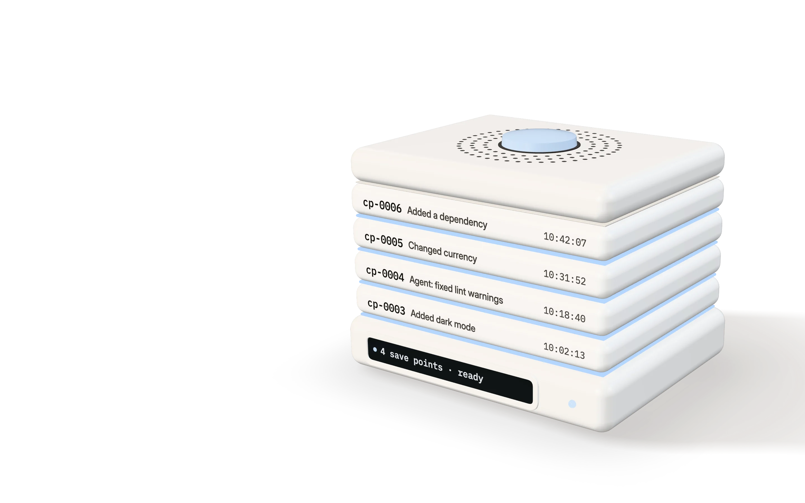
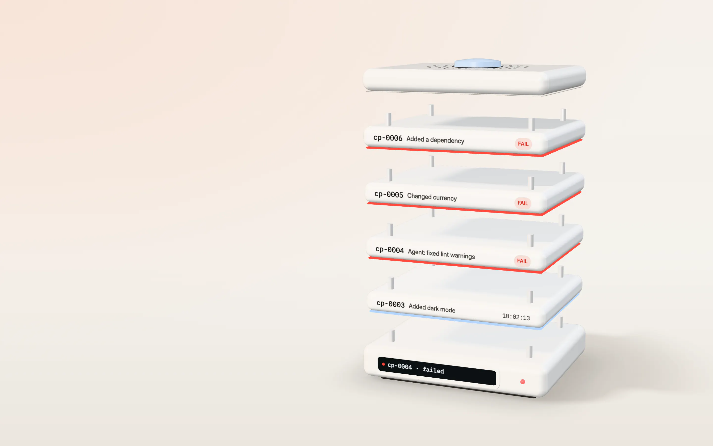
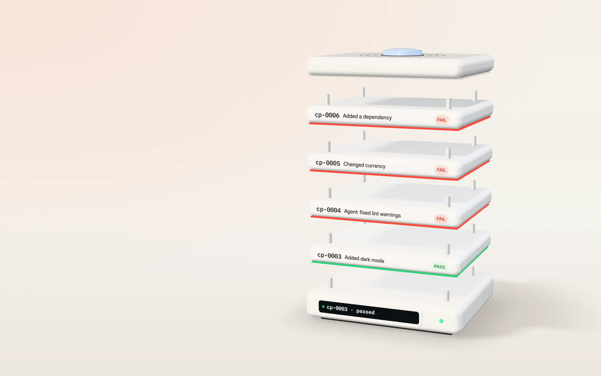
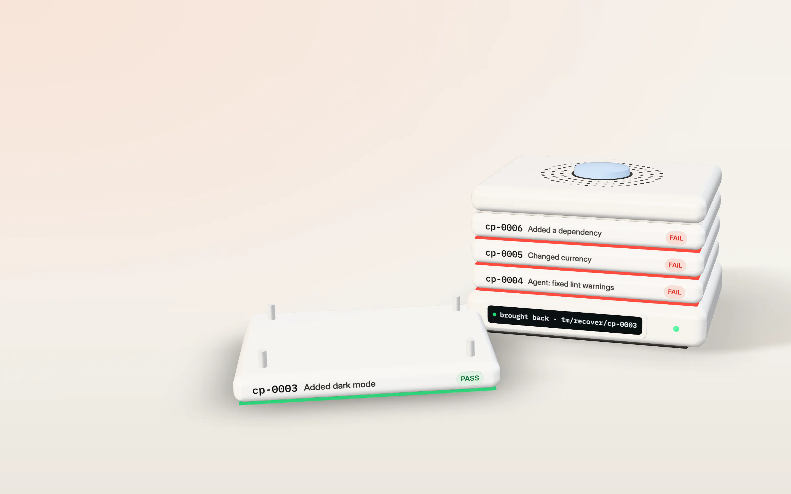
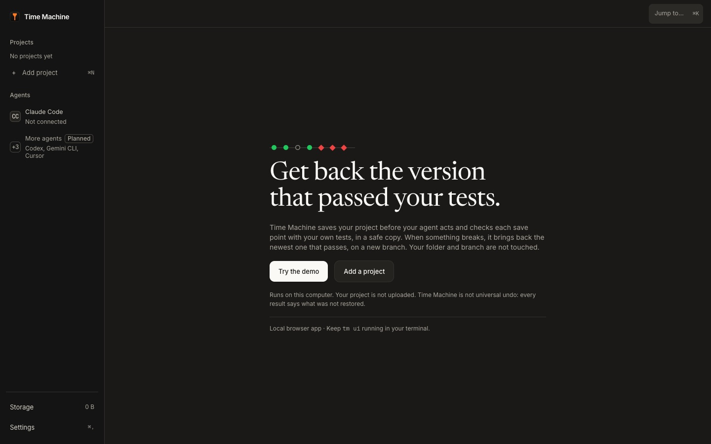
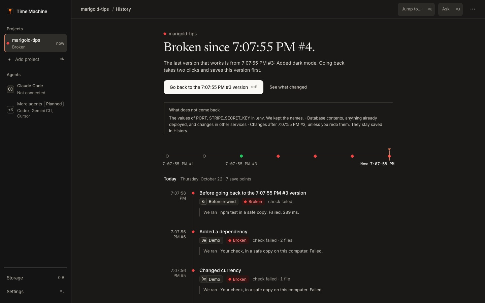
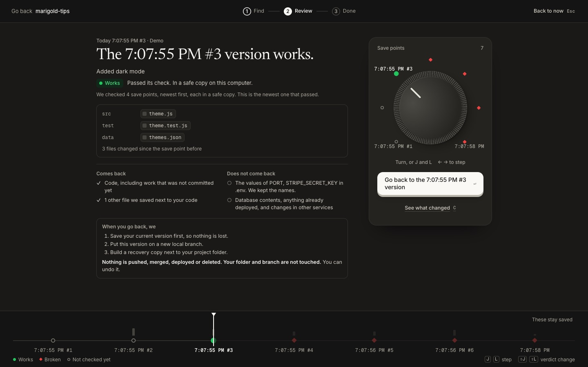

Your agent broke it. Get back the version that passed.
Time Machine saves your project before Claude Code acts, checks each save point with your own tests, and brings back the newest one that passes.
See how it works Install from source Works on macOS and Linux. Needs Node 22 and Git.

Every save point, checked. With your own tests.
cp-0006, cp-0005 and cp-0004 failed their tests.

This one passed. Added dark mode.
cp-0003 · passed its tests, in a separate copy

Bring it back. Keep your work.
On branch tm/recover/cp-0003, in a separate copy. Your folder stays as it is.
- Save points stay on your computer.
- No account needed and no cloud service.
Find the last version that passed.
A real tm demo run, replayed. Its project broke at cp-0004, when an agent fixed some lint warnings. Find checks the save points the way tm find-good does: newest first, stopping at the first one that passes. Bring back puts that one on a new branch, next to your folder.
- cp-0006 FAIL Added a dependency
- cp-0005 FAIL Changed currency
- cp-0004 FAIL Agent: fixed lint warnings
- cp-0003 PASS Added dark mode. Brought back on tm/recover/cp-0003.
cp-0006
Not checked yet Added a dependency
Illustration. Save points, verdicts and output are from a real tm demo run on a synthetic project. Arrow keys move between save points.
The web app
Open it with tm ui. It runs on your computer, in your browser. Nothing is hosted, and you don’t need an account to use it.
-
1
Add your project and pick the check
Point the web app at your project folder. It guesses the command that shows your project works, such as
npm test, and you confirm it.
Real screen, synthetic project. -
2
See which versions work and which broke
Every agent turn gets a save point, a copy of your project made before each request to the AI and before risky commands. The history shows plainly which ones work and which are broken, and the last one that worked.
- Works
- Your own tests ran on it in a separate copy and passed.
- Broken
- Your tests ran on it and failed.
- Couldn’t check
- Something saved is missing, or setup failed, so the check did not run.
- Not checked yet
- Saved, but not checked. Never shown as working.

Real screen, synthetic project. -
3
Rewind to the last version that works, in a separate copy
Before anything happens, you see what comes back and what does not, like passwords or your database. The good version then comes back next to your work. Your current folder stays as it was, so nothing is lost, and you can undo the rewind.

Real screen, synthetic project.
How Time Machine is built, drawn part by part: a save point, the check, the rewind and what reaches the internet. See the drawings
More than a commit comes back
A save point is a Git commit pinned under refs/tm, plus a Git bundle in a store outside your project, plus what Git alone would miss. Every recovery report lists both columns, in these words.
Comes back
- Your code, with uncommitted edits. The commit is made from your working tree, so edits you had not committed yet are in it.
Code at commit a1b2c3d - Files not in Git. New files you had not added yet, up to a size limit you set.
3 saved files - Config, by key name. Keys you allowlist come back with their values. Every other key is kept as its name and a fingerprint, so you can tell what changed without the value ever being stored.
Config: PORT - Lockfiles.
package-lock.json,pnpm-lock.yaml,yarn.lock,Cargo.lockand similar, even when your .gitignore skips them, checked byte for byte against their recorded digests.Dependencies: package-lock.json - Environment definition files.
Dockerfile,docker-compose.yml,.devcontainer/devcontainer.jsonand similar when Git has them. Version pins like.nvmrcand.tool-versionsalso when ignored. All checked against their digests.Environment definition: Dockerfile, .nvmrc - A Git bundle in the store. Kept in
~/.timemachine, so the save point survives the project folder being deleted. Runtime versions such as Node and Git are recorded and shown in a compare, not restored.
Does not come back
- Secret values. Values from config files like .env are never stored, not even on your own computer, only key names and a fingerprint. The report names the keys you set again by hand.
Secret values in .env: STRIPE_SECRET_KEY - Files that look like secrets. An edited tracked file that looks like it holds a secret keeps its last committed version instead. A file named like a secrets file is not saved.
.env.local is a secrets file by name, so it was not saved - Files your .gitignore skips. Folders like
node_modulesor build output, unless you ask for them.Files your .gitignore skips were not saved: dist - Database contents, deployed versions and external services. Emails sent, payments made, anything on a server.
Databases, deployed versions and external services are not captured
Every report ends with the same line: Restored: code, captured files, config. Not restored: database, deployed version, secret values. An unchecked save point is shown as not checked, never as working.
Why not Claude Code’s rewind or Git
Time Machine runs your own tests on each save point in a separate copy. It brings the working one back on a new branch without touching your folder, and lists what did not come back.
Scroll the table sideways or use the arrow keys to compare all three.
| Capability | Claude Code rewind | Git | Time Machine |
|---|---|---|---|
Files changed by shell commands like rm | Only in files Claude also edited | Only what you committed | Saved before each prompt and before commands like rm -rf |
| Saves automatically while the agent works | Yes | No, you commit | Yes, with Claude Code hooks |
| Tells you which version passes your tests | No | No, you test by hand | Yes, each in a separate copy |
| Going back leaves your current work alone | Restores in place | Depends on the command | New branch and a copy |
| Lists what didn’t come back | No | No | Every time |
Claude Code behavior from its checkpointing docs. Other agents are planned, not built.
Pay once
The web app is free for up to 3 projects at a time. One payment of $50 lets it list as many as you like. No subscription.
The web app
$50 once
- The web app for as many projects as you like, on any number of your own computers.
- Updates while we ship them.
- A key verified offline, on your computer.
- No subscription.
- Refund within 14 days by email. Terms (draft)
Why pay once. No subscription to cancel, no password to keep. The web app runs on your computer, and so does the key. Already bought it? Sign in to see your key again.
The tm command line tool is open source (MIT) and stays that way. Save points, checks, find-good, recover, the Claude Code hooks and the MCP server never need a key, and restores are never behind the paywall.
For developers
The tm CLI works today on macOS and Linux. Build it from source, run the demo, then open the web app in your browser with tm ui.
In a terminal Not on npm yet
git clone https://github.com/ShadowEsu/Time-Machine.git cd Time-Machine pnpm install && pnpm build npm install -g ./packages/cli tm demo
Needs Node 22 or newer and Git. No pnpm? Run npm install -g pnpm first. Keep the Time-Machine folder. The tm command runs from it.
tm demo builds a small synthetic project in a temporary folder, breaks it, then brings back the last version that passed. Your own projects are not touched. Most of the first run is downloading and building.
Then the web app
tm ui
tm ui opens the web app in your browser. It runs on your own computer at 127.0.0.1, not on a website, so your project is never uploaded. Keep the terminal open while you use it. It is free for up to 3 projects at a time; a one-time key lifts the limit (tm license <key>, or Settings > License). Pay once for the key.
Set up with Claude Code
Open Claude Code in your project and paste this. The steps it follows are in install.md.
Read https://time-machine.company/install.md and set up Time Machine in this project.
- Save points stay on your computer, in
~/.timemachine. Nothing is uploaded. The optional Ask feature in the web app sends a short summary to Google only after you turn it on.
One engine behind the app, the CLI and the hooks
The web app, the tm CLI, the Claude Code hooks and the MCP server call the same engine, so their answers always match.
-
1
Save points before every prompt
Claude Code hooks save before each prompt and before risky shell commands, even when nothing is committed yet.
Claude Code’s own rewind skips files that only shell commands changed. Time Machine saves first, outside your project folder, with a Git bundle.
Built Claude Code hooks
-
2
Your tests decide: PASS or FAIL
Each save point is checked in a separate copy.
$ tm find-good cp-0004 FAIL cp-0003 PASS newest that works
Built PASS or FAIL per save point
-
3
Go back on a new branch
The newest version that passes comes back.
Your folder and current branch are never touched. Nothing is pushed, merged or deployed. Every report lists what did not come back.
Built
tm recover cp-0003
$ tm find-good cp-0006 FAIL The check failed with exit code 1. cp-0005 FAIL The check failed with exit code 1. cp-0004 FAIL The check failed with exit code 1. cp-0003 PASS The check passed. PASS cp-0003 is the newest version that works. $ tm recover cp-0003 Recovery ready for cp-0003. Nothing was pushed, merged or deployed. Branch tm/recover/cp-0003 Saved first cp-0007, your state before this recovery Not restored Secret values in .env: PORT, STRIPE_SECRET_KEY
tm demo on a synthetic project, shortened.Keep a way back while your agent works
Time Machine is not
- A backup or a Git replacement. Keep committing, and keep a disk backup.
- An account or a cloud service. The
tmCLI andtm uirun on your computer. - A restore in place. You get a separate copy on a new branch.
- Another approval prompt. The hooks save and check without asking you to approve each step.